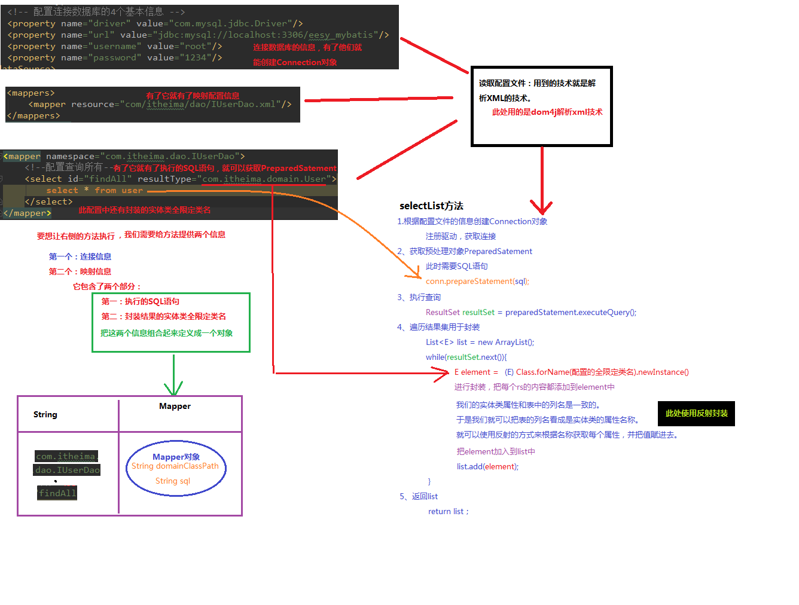

三层架构
表现层：用于展示数据
业务层：处理业务需求
持久层：和数据库交互
JDBC问题分析
数据库链接创建、释放频繁造成系统资源浪费从而影响系统性能，如果使用数据库链接池可解决此问题。
Sql 语句在代码中硬编码，造成代码不易维护，实际应用 sql 变化的可能较大，sql 变动需要改变 java 代码。
使用 preparedStatement 向占有位符号传参数存在硬编码，因为 sql 语句的 where 条件不一定，可能 多也可能少，修改 sql 还要修改代码，系统不易维护。
对结果集解析存在硬编码（查询列名），sql 变化导致解析代码变化，系统不易维护，如果能将数据库记 录封装成 pojo 对象解析比较方便
MyBatis 框架概述
mybatis是一个持久层框架，用 Java 写的
它封装了 jdbc 操作的很多细节，使开发者只需要关注 sql 语句本身， 而不需要关注加载驱动、创建连接、创建 statement 等繁杂的过程。
通过xml 或注解的方式将要执行的各种statement配置起来
采用 ORM 思想实现了对结果集的封装
ORM：Object Relational Mapping 对象关系映射，简单地说，就是把数据库表和实体类及实体类的属性对应起来，让我们可以操作实体类就实现操作数据库表
Mybatis 入门 mybatis 的环境搭建
创建maven工程并导入坐标
创建实体类User.java和 dao 的接口IUserDao.java
User.java
1 2 3 4 5 6 7 8 9 10 11 12 13 14 15 16 17 18 19 20 21 22 23 24 25 26 27 28 29 30 31 32 33 34 35 36 37 38 39 40 41 42 43 44 45 46 47 48 49 50 51 52 53 54 55 56 57 58 59 60 61 62 63 64 package com.conv.domain;import java.io.Serializable;import java.util.Date;public class User implements Serializable private Integer id; private String username; private Date birthday; private String sex; private String address; public Integer getId () return id; } public void setId (Integer id) this .id = id; } public String getUsername () return username; } public void setUsername (String username) this .username = username; } public Date getBirthday () return birthday; } public void setBirthday (Date birthday) this .birthday = birthday; } public String getSex () return sex; } public void setSex (String sex) this .sex = sex; } public String getAddress () return address; } public void setAddress (String address) this .address = address; } @Override public String toString () return "User{" + "id=" + id + ", username='" + username + '\'' + ", birthday=" + birthday + ", sex='" + sex + '\'' + ", address='" + address + '\'' + '}' ; } }
IUserDao.java
1 2 3 4 5 6 7 8 9 10 11 12 13 14 15 package com.conv.Dao;import com.conv.domain.User;import java.util.List;public interface IUserDao List<User> findAll () ; }
创建 mybatis 主配置文件SqlMapConfig.xml（文件名任意）
1 2 3 4 5 6 7 8 9 10 11 12 13 14 15 16 17 18 19 20 21 22 23 24 25 26 27 28 29 30 31 32 33 34 35 <?xml version="1.0" encoding="UTF-8"?> <!DOCTYPE configuration PUBLIC "-//mybatis.org//DTD Config 3.0//EN" "http://mybatis.org/dtd/mybatis-3-config.dtd" > <configuration > <environments default ="mysql" > <environment id ="mysql" > <transactionManager type ="JDBC" > </transactionManager > <dataSource type ="POOLED" > <property name ="driver" value ="com.mysql.cj.jdbc.Driver" /> <property name ="url" value ="jdbc:mysql://localhost:3306/learn?serverTimezone=UTC" /> <property name ="username" value ="root" /> <property name ="password" value ="4869" /> </dataSource > </environment > </environments > <mappers > <mapper resource ="com/conv/dao/IUserDao.xml" /> </mappers > </configuration >
创建映射配置文件IUserDao.xml（文件名任意）
1 2 3 4 5 6 7 8 9 10 11 <!DOCTYPE mapper PUBLIC "-//mybatis.org//DTD Mapper 3.0//EN" "http://mybatis.org/dtd/mybatis-3-mapper.dtd" > <mapper namespace ="com.conv.dao.IUserDao" > <select id ="findAll" resultType ="com.conv.domain.User" > select * from user; </select > </mapper >
配置 log4j.properties
1 2 3 4 5 6 7 8 9 10 11 12 13 14 15 16 17 18 log4j.rootCategory =debug, CONSOLE, LOGFILE log4j.logger.org.apache.axis.enterprise =FATAL, CONSOLE log4j.appender.CONSOLE =org.apache.log4j.ConsoleAppender log4j.appender.CONSOLE.layout =org.apache.log4j.PatternLayout log4j.appender.CONSOLE.layout.ConversionPattern =%d{ISO8601} %-6r [%15.15t] %-5p %30.30c %x - %m\n log4j.appender.LOGFILE =org.apache.log4j.FileAppender log4j.appender.LOGFILE.File =d:\axis.log log4j.appender.LOGFILE.Append =true log4j.appender.LOGFILE.layout =org.apache.log4j.PatternLayout log4j.appender.LOGFILE.layout.ConversionPattern =%d{ISO8601} %-6r [%15.15t] %-5p %30.30c %x - %m\n
环境搭建的注意事项
在 Mybatis 中把持久层的操作接口名称和映射文件也叫做：Mapper，所以命名中：IUserDao 和 IUserMapper 是一样的
在 idea 中创建目录的时候，它和包是不一样的：
包（package）在创建时：com.conv.dao它是三级结构
目录（directory）在创建时：com.conv.dao是一级目录
mybatis 的映射配置文件位置必须和 dao 接口的包结构相同
映射配置文件的 mapper 标签 namespace 属性的取值必须是 dao 接口的全限定类名
映射配置文件的操作配置（select等），id 属性的取值必须是 dao 接口的方法名
第3、4、5点保证了在开发中无需实现 dao 的实现类
入门案例
读取配置文件
创建 SqlSessionFactory 工厂
创建 SqlSession
创建 Dao 接口的代理对象
执行 dao 中的方法
释放资源
注意事项：
不要忘记在映射配置IUserDao.xml中告知 mybatis 要封装到哪个实体类中
配置的方式：指定实体类的全限定类名（resultType="com.conv.domain.User"）
代码示例：MybatisTest.java
1 2 3 4 5 6 7 8 9 10 11 12 13 14 15 16 17 18 19 20 21 22 23 24 25 26 package com.conv.test;public class MybatisTest @Test public void test1 () throws IOException InputStream in = Resources.getResourceAsStream("SqlMapConfig.xml" ); SqlSessionFactoryBuilder builder = new SqlSessionFactoryBuilder(); SqlSessionFactory factory = builder.build(in); SqlSession session = factory.openSession(); IUserDao userDao = session.getMapper(IUserDao.class); List<User> users = userDao.findAll(); for (User user : users) { System.out.println(user); } session.close(); in.close(); } }
基于注解的入门案例
把 IUserDao.xml移除，在 dao 接口的方法上使用 @Select 注解，并且指定 SQL 语句
IUserDao.java
1 2 3 4 5 6 7 8 9 10 11 12 13 14 15 16 package com.conv.dao;import com.conv.domain.User;import org.apache.ibatis.annotations.Select;import java.util.List;public interface IUserDao @Select("select * from user") List<User> findAll () ; }
在 SqlMapConfig.xml 中的 mapper 配置时，使用 class 属性指定 dao 接口的全限定类名
1 2 3 4 5 6 7 8 9 10 <mappers > <mapper class ="com.conv.dao.IUserDao" /> </mappers >
Mybatis 是支持写 dao 实现类的
我们在实际开发中，都是越简练越好，所以不管使用 XML 还是注解配置，都是采用不写 dao 实现类的方式
* DAO 实现类 1 2 3 4 5 6 7 8 9 10 11 12 13 14 15 16 17 18 19 20 21 22 23 24 25 26 27 28 29 30 package com.conv.dao.impl;import com.conv.dao.IUserDao;import com.conv.domain.User;import org.apache.ibatis.session.SqlSession;import org.apache.ibatis.session.SqlSessionFactory;import java.util.List;public class UserDaoImpl implements IUserDao private SqlSessionFactory factory; public UserDaoImpl (SqlSessionFactory factory) this .factory = factory; } @Override public List<User> findAll () SqlSession session = factory.openSession(); List<User> users = session.selectList("com.conv.dao.IuserDao.findAll" ); session.close(); return users; } }
自定义 Mybatis 的分析 mybatis 在使用代理 dao 的方式实现增删改查时做了：
创建代理对象
在代理对象中调用 selectList
1 2 3 4 5 6 7 8 9 10 11 12 13 14 15 16 17 18 19 20 21 22 23 24 25 26 27 28 29 30 31 public class MybatisTest @Test public void test1 () throws IOException InputStream in = Resources.getResourceAsStream("SqlMapConfig.xml" ); SqlSessionFactoryBuilder builder = new SqlSessionFactoryBuilder(); SqlSessionFactory factory = builder.build(in); SqlSession session = factory.openSession(); IUserDao userDao = session.getMapper(IUserDao.class); List<User> users = userDao.findAll(); for (User user : users) { System.out.println(user); } session.close(); in.close(); } }
selectList方法的流程：
需要的信息：
连接信息
映射信息（包含执行的 sql 语句、封装结果的实体类全限定类名）
读取配置文件：用到的技术就是解析XML的技术。
此处用的是 dom4j 解析 xml 技术
根据配置文件的信息创建 Connection 对象
注册驱动，获取连接
获取预处理对象 PreparedStatement
此时需要 sql 语句（从 XML 解析得到）
执行查询
ResultSet result = preparedStatement.executeQuery();
遍历结果集用于封装
1 2 3 4 5 6 7 8 9 10 11 12 List<E> list = new ArrayList(); while (resultSet.next()){ E element = (E)Class.forName(配置的全限定类名).newInstance(); list.add(element); }
返回 list
return list;

使用SqlSession创建Dao接口的代理对象 IUserDao userDao = session.getMapper(IUserDao.class);
根据 Dao 的字节码创建 dao 的代理对象
1 2 3 4 5 6 7 8 9 10 public <T> T getMapper (Class<T> daoInterfaceClass) { Proxy.newProxyInstance(类加载器, 代理对象要实现的接口字节码数组, 如何代理); }